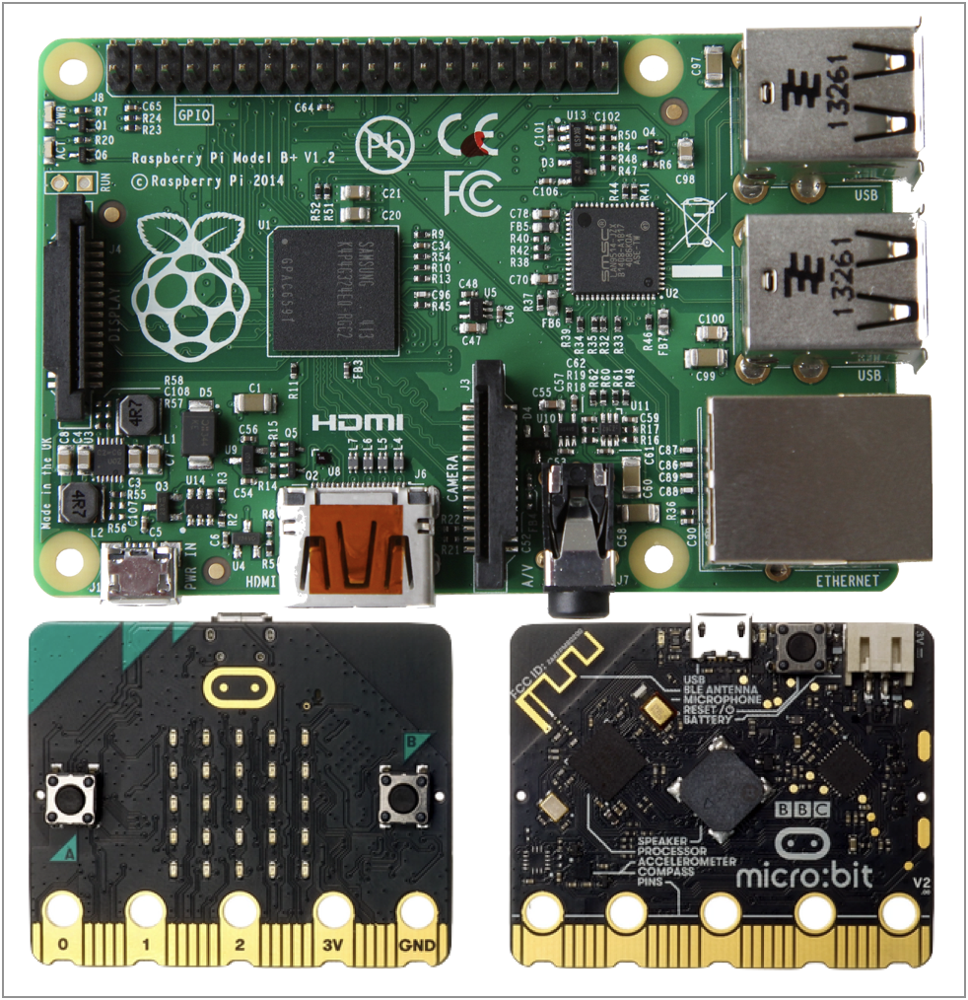
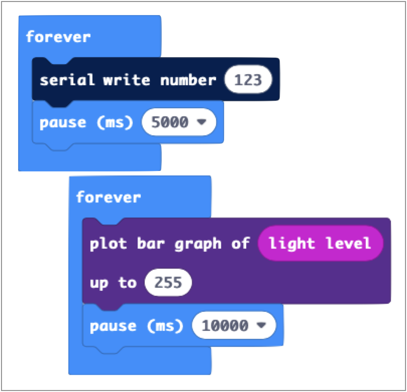
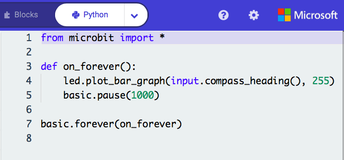

Some details of my 'playing' with an old Raspberry Pi can be found here. However, having set it up so that I can interact with it through the iMac or Macbook Air, I thought that it would be fun to try to get it 'talking' with a BBC micro:bit.
The image shows the latest versions of both the Raspberry Pi (version 4) and the micro:bit (version 2), although I have an older version of both.
What I set out to do was to display (on a Mac) an application running on the Pi that would show the direction in which the micro:bit was facing. I could choose any micro:bit sensor or pin input, but a compass seemed appealing.
In order to do this I needed to find:
My question about powering was really due to my poor memory. This illustration shows the model 1B Pi. You can see the micro usb socket on the far left corner that is used for powering the Pi. Then you can see that there are two usb 2 sockets at the near end. So power is quite separate from usb communications and there is no problem. Actually there was a problem. The BBC Micro:bit also uses a micro usb socket for its power and communication, but I only had one cable of that type. So, in lockdown, I had to order another!
 So as to make development easier, I started by connecting the micro:bit to my MacBook, so that I could write code for the micro:bit and more easily view the output. Within the MakeCode block language you can simply use the 'serial write number' block to send a number to the serial port. It is possible to view the sent data in a terminal window, without needing to write any application. The instructions for Mac OS are:
ls /dev/*usb* to show which usb nodes are in use. I got both /dev/cu.usbmodemFD122 and /dev/tty.usbmodemFD122, so used the Arduino IDE to find that the former was the one to use.sudo screen /dev/cu.usbmodemFD122 115200. You may need to install the screen program if you don't already have it. The application prints each value read from the micro:bit.You can also use the 'plot bar graph' block, which, as well as driving the led matrix, sends data to the serial port. I actually used the micro-python version, since I had trouble getting the number types to match between the micro:bit and my python code running on the MacBook.
Perhaps a more sophisticated alternative might be to use the Mu python editor which apparently allows you to plot the received serial data in the editor. Details can be found here.
Apparently the Microsoft MakeCode editor also plots received data, but only in a Chrome or Microsoft Edge browser.
At the other end of the link, the python program running on the Pi has to read the data being sent from the micro:bit. Luckily there is a library called 'serial' that can be imported into the code. Then you can define the serial port and use the readline() method to obtain the value sent by the 'plot_bar_graph' function on the micro:bit. It took a little while to discover that the micro:bit uses a baud rate of 115,200 b/s, then a simple test worked. I also found an example of how to find all the ports on a device and then interrogate each so as to find the one to which the micro:bit is connected.
So most of my time was spent on this part of the project. I wanted to create a window that displayed an image that represented a compass, with the image rotating in line with the movement of the micro:bit. I decided to use python, even though my knowledge of python was rudimantary and I had never tried to create a GUI. I also decided that it would be easier to develop the application on the MacBook and then port it across to the pi.
In order to produce this application I had to:
This photo shows what I was aiming to achieve; with the micro:bit connected to the raspberry pi, which was displaying its desktop on the MacBook via Ethernet and wifi and an image of a compass. However, I still started with the micro:bit connected directly to the MacBook so as to provide an easier and faster development environment. I had previously discovered that there is a GUI library for python called tkinter. Using that I was able to create a window of a given size and with a background colour. Later I decided to inhibit the window from being resized, although it could still be moved around the desktop.
Unlike Windows or Linux, menu entries for a MacOS application appear on the bar at the top of the desktop, rather than within the application window. However, the creation of menu entries is the same, involving several steps:
For this application it was easy. I only wanted one menu entry (file), with only one command (exit) so that I could close the application.
After some playing around and research I discovered that the latest way to position widgets within a tkinter window is to use a 'grid'. Basically you specify a set of rows and columns and place a widget in a cell. You can make a widget span several rows and/or columns, although I didn't need to do that.
I decided to use the latest 'themed' widgets and so imported the ttk library. However, I found that MacOS guards its default themes and so I could not change the background colour of a widget. So I created a new theme, which allowed me to set whatever I wanted. I used the Canvas widget to draw the triangular pointer.
tkinter provides functions and methods for creating and modifying widgets, but it doesn't handle images. For that you need PIL (Python Image Library). However, it seems that PIL has not been developed recently and so a new version, known as Pillow, is now used. Although you install Pillow (python3 -m pip install --upgrade Pillow) you then import PIL within your python code. Pillow then allowed me to open an image, rotate it and place it in a Label widget. This could then be positioned in the grid.
Opening an image, rotating it and displaying it is all very well, but I needed to do this repeatedly, reading an angle from the micro:bit each time. The problem is that the tkinter code is not run until a function called mainloop() is run, and this is usually the last line of code. Therefore, having read the usb port and generated the image in a function, it is necessary to pause the thread so that the tkinter code runs. To do this you can use the 'after' function on the label containing the image, pausing the function for a period of time and then recalling the function (in this case rotate()).
The python code for this application can be viewed here. However, the aim of the exercise was to make the micro:bit talk to the pi and display the result. So, having updated python 3 and installed the various libraries on the pi, I copied the application code across. Luckily the VNC client and server provide file transfer facilities. I also copied across the micro:bit code file and so could drag that on to the micro:bit device in the file manager to download it. Much to my surprise it worked first time!
So we have the micro:bit connected to the raspberry pi via a usb cable and the pi connected to the MacBook via an Ethernet cable, the house wiring and wifi, so that the pi's desktop is shown on the MacBook. I simply ran the python application from the python 3 IDE.
If you run the video you will see the image of a compass move as the micro:bit is rotated. You will also notice that it is not very smooth, even allowing for the fact that it is only being refreshed every half second. This seems to be due to the somewhat erratic behaviour of the magnetometer on the micro:bit.
© David James 2020 Last updated: 4th March 2021